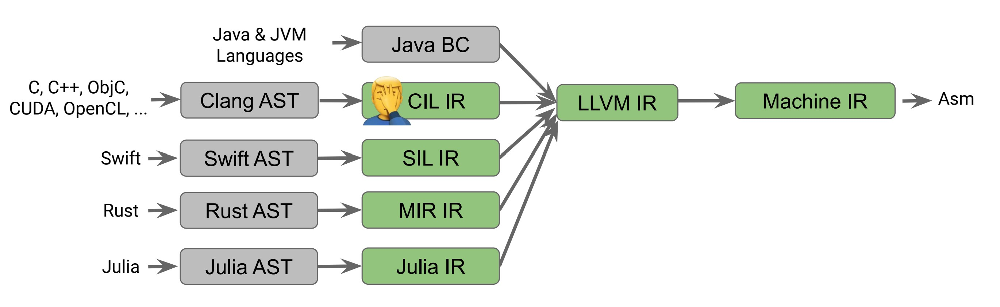

Abbreviation for list processor.
(+ 10 10)(+ (+ 1 2)
(* 3 3))// (1+ 2) + (3 * 3)
(+ 10 10)
add
/ \
/ \
10 10
(+ (- 5 3) (* 10 2))
add
/ \
/ \
sub mul
/ \ / \
/ \ / \
5 3 10 2
-fdump-tree-gimple to generate GIMPLE for your source code.For CLang this simplified representation is called LLVM IR.
-emit-llvm to emit LLVM IR.int mul_add(int x, int y, int z) { return x * y + z; }
define i32 @mul_add(i32 %x, i32 %y, i32 %z) {
entry:
%tmp = mul i32 %x, %y
%tmp2 = add i32 %tmp, %z
ret i32 %tmp2
}
Currently, the major front-ends are -

Has front-ends for Ada, C, C++, D, Delphi, FORTRAN, Haskell, Julia, Objective-C, Rust, and Swift.
| Java’s Virtual Machine. | (too much Java) |
| Microsoft’s Common Language Run-time. | (too much Microsoft) |
| Python run-time. | (too slow, too python-y) |
| Julia run-time. | (specializes in scientific computing, too much like python) |
| JavaScript Engines in browsers. | (too slow, no one likes JavaScript) |
(module (import "wasi_unstable" "fd_write" (func $fd_write (param i32 i32 i32 i32) (result i32))) (memory 1) (export "memory" (memory 0)) (data (i32.const 8) "hello world\n") (func $main (export "_start") (i32.store (i32.const 0) (i32.const 8)) (i32.store (i32.const 4) (i32.const 12)) (call $fd_write (i32.const 1) (i32.const 0) (i32.const 1) (i32.const 20) ) drop ) )
gnu-linux-x86_64,wasm32 or just wasm.